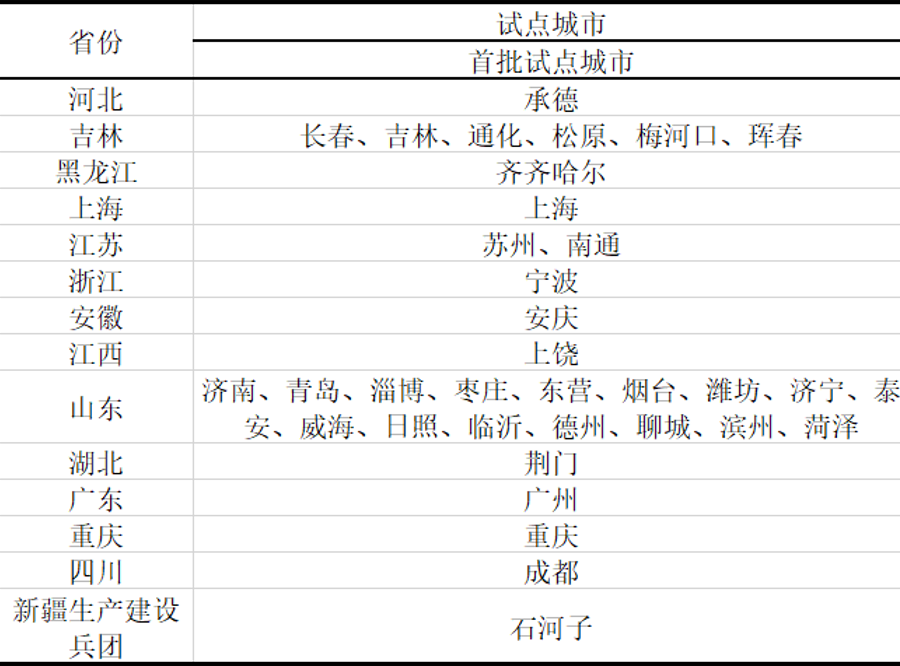
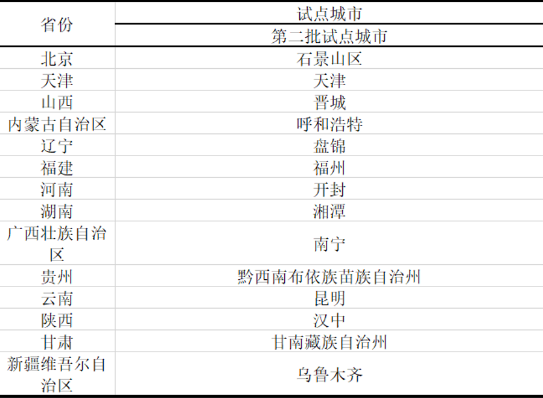

2016年，我国在15个城市启动长期护理保险制度试点，包括上海、青岛、长春等地，重点解决失能老人的基本护理需求。试点由医保基金划拨资金，覆盖城镇职工医保参保人群，采用"以服务给付为主、现金补贴为辅"的模式。参保人经评估达到重度失能标准后，可享受机构护理、居家护理等服务，或领取定额护理补贴。这一阶段主要探索筹资机制、评估标准和服务体系，为全国推广积累经验，标志着我国开始系统性应对老龄化社会的护理保障问题。

2020年，长期护理保险试点范围扩大至49个城市，并首次明确由国家医保局统筹推进。新试点强调"独立险种"定位，探索单位和个人共同缴费的可持续筹资模式，部分地区将城乡居民纳入保障范围。重点完善了失能等级评估国家标准，推广"第六险"概念，鼓励商业保险参与经办服务。青岛、苏州等地创新"居家护理优先"政策，发展"互联网+护理"等新模式。
